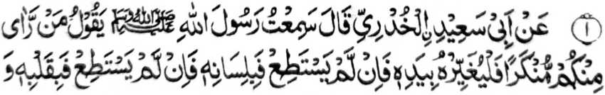
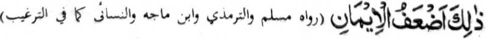

Si-i sangka-iya pinto, na pagalowin aken a manga katharo o Nabi (Sallallaho ‘Alaihi Wasallam) a miyaosay ko ma-ana angkanan a miyanga-aaloy a manga Ayaat sa Qur’an. Kena ba aya antap si-i na ba marangkom so langowan a Hadith a maka-aantap si-i. Opama ka ba ko den aloya so langowan o Ayaat ago so manga Hadith sangka-iya a bandingan na ipekhawan aken oba baden da a matiya-on, sabap sa so manga tao imanto a tanto a maregen a kakhasenggay ran non sa oras. Para marinayag rekano so taman a kala-i kipantag o Tabligh sa pangilay-layan o Nabi (Sallallaho ‘Alaihi Wasallam), go so maregen a khabolosan o ndarainonen, na mangaloy ako sa maito ko manga katharo o Nabi (Sallallaho ‘Alaihi Wasallam):


Miyaka thitayan ko Abu Sa’id Al-Khudhrie (Radhiallaho Anho) a pitharo iyan, “Miyaneg aken so Rasulollah (Sallallaho Alaihi Wasallam) na gi-i niyan tharo-on, ‘Sa maka-ilay rekano sa marata na rena niyan a barokan, o di niyan khagaga na pakanggolalana niyan ko dila iyan, o di niyan khagaga na paka-okita niyan ko [kagowad] o poso iyan, na giyanan-i miyakaloba-lobay a paratiyaya.
Si-i ko isa a Hadith na miyatharo-on a opama ka so tao na khagaga niyan a karena niyan ko marata a nggolalan ko dila iyan na rena niyan; o di na aya minos na pikira niyan ko poso iyan a karata angkoto sa giyoto-i kiyapakalidas iyan (ko dosa). Pitharo pen o isa a Hadith a opama ka so tao na katago-an so poso iyan sa kagowad ko dosa, na titho sekaniyan a miyaratiyaya ogaid na tanto a malobay ko paratiyaya. Giyangka-iya bandingan na miya-aloy pen ko manga ped a katharo o Nabi (Sallallaho ‘Alaihi Wasallam). Imanto na pikira niyo phiya-piya ay kadakel a Muslim a inggogolalan niyan angka-iya Hadith. Pira reketano-i inipami-is iyan so marata, pira peman-i minggolalan ko dila iyan, go pira ka tao-i tanto niyan a inikagowad ko poso iyan? Siyapen tano so manga ginawa tano sangka-iya a bandingan.